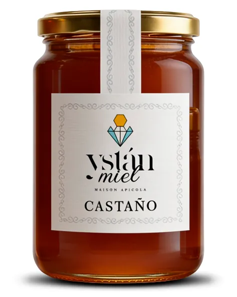
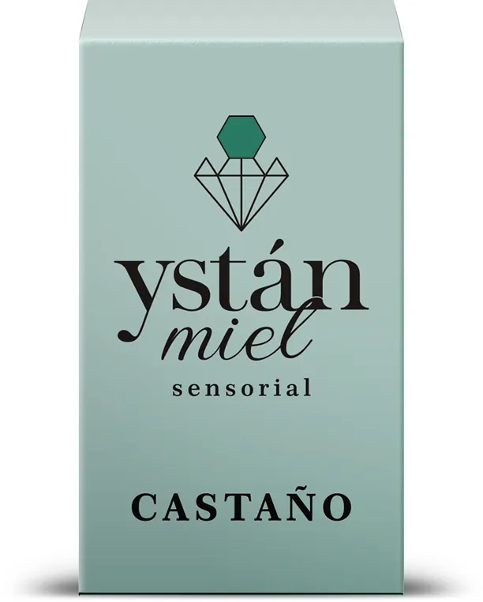
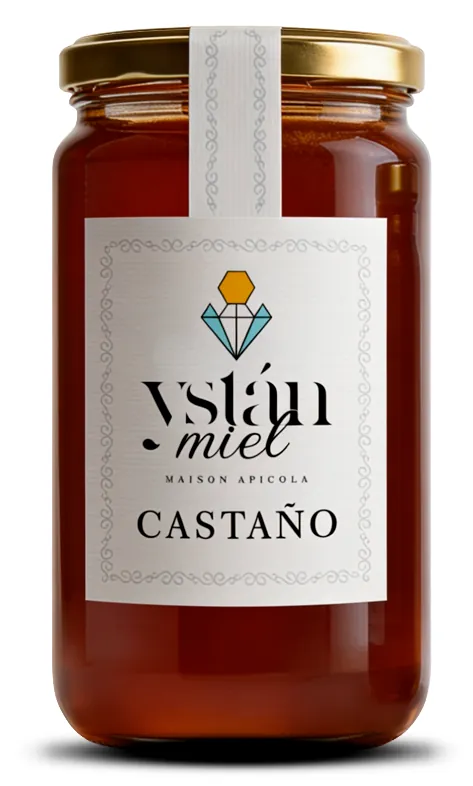
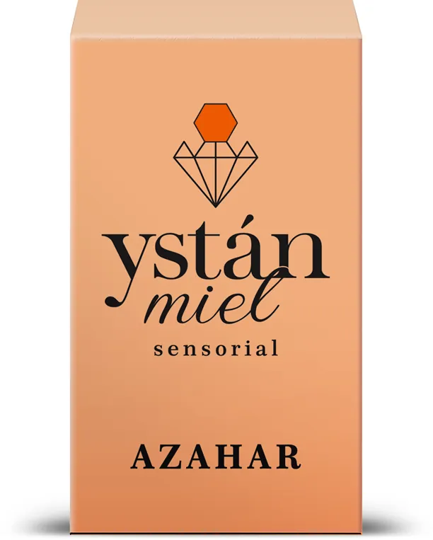
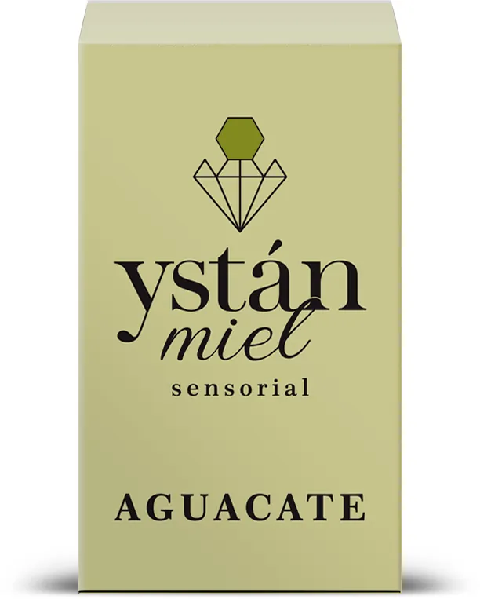

Miel de Castaño · 500 g11,50 € IVA incluido
Inicio / La tienda / Miel Sensorial Castaño · 500 g

Descripción Miel cruda 100 % natural, sin aditivos. La colección Sensorial está inspirada en paisajes, aromas y emociones que pertenecen a la memoria. Ystan Miel Sensorial Castaño se presenta en frascos de 500 g, un formato ideal para disfrutar en mesa. Sabor Notas amaderadas, ligero toque amargo, sabor intenso, textura densa y color oscuro. Procedente del Valle del Genal…
Descripción
Miel cruda 100 % natural, sin aditivos. La colección Sensorial está inspirada en paisajes, aromas y emociones que pertenecen a la memoria. Ystan Miel Sensorial Castaño se presenta en frascos de 500 g, un formato ideal para disfrutar en mesa.
Sabor
Notas amaderadas, ligero toque amargo, sabor intenso, textura densa y color oscuro. Procedente del Valle del Genal (Málaga), donde los castañares confieren a esta miel un carácter singular.
Esencia aromática
«Sendero entre bruma y silencio», esencia creada por el perfumista Ricardo Masachis para Ystan miel, con notas de castaña dulce, cedro, musgo verde, niebla, escarcha y miel. El despertar de la memoria.
Origen y elaboración
Nuestras colmenas se sitúan entre los castañares del Valle del Genal, donde las abejas recolectan el néctar que da origen a esta variedad.
La trazabilidad está garantizada desde la colmena hasta el frasco mediante controles analíticos. Con una humedad inferior al 18 % y una elevada actividad diastásica, cada lote cumple rigurosos estándares de calidad.
La miel se manipula y envasa en frío mediante decantación natural, sin filtrado, preservando el polen, las enzimas y otros compuestos naturales fruto del trabajo de las abejas.
Conservación
Consérvese en un lugar fresco y seco, protegido de la luz directa. No almacenar en refrigeración. Al tratarse de una miel cruda, puede cristalizar de forma natural con el paso del tiempo.
Este proceso es un signo de autenticidad y calidad, y no altera sus propiedades ni sus características nutricionales.
Si se desea recuperar una textura más fluida, calentar suavemente al baño maría, evitando temperaturas superiores a 40 °C, para preservar sus propiedades naturales.
Miel cruda. Puede cristalizar con el tiempo: es natural y no altera sus propiedades. Consérvala en lugar fresco y seco, sin nevera.

Miel de Castaño · 500 g
Miel de Castaño · 1 kg
Miel Sensorial Azahar · 500 g
Miel Sensorial Aguacate · 500 g